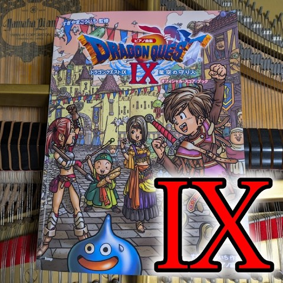

Dragon Quest IX 星空の守り人 Piano
すべてのポッドキャストを表示
Open playlistDragon Quest Piano Library
Browse Dragon Quest IX piano performances with song links and YouTube playlist access.

すべてのポッドキャストを表示
Open playlistSongs
Song list ordered by catalog number.
| No. | Title | Category | Difficulty |
|---|---|---|---|
| IX-1 | Overture | Opening | Not set |
| IX-2 | Intermezzo | Interlude | Not set |
| IX-3 | Heavenly Prayer | Churches & Shrines | Beginner-Intermediate |
| IX-4 | Palace Oboe | Castle | Not set |
| IX-5 | Come to My Town | Towns & Villages | Not set |
| IX-6 | Healed by a Hymn | Churches & Shrines | Not set |
| IX-7 | Dreaming Town | Towns & Villages | Not set |
| IX-8 | Tavern Polka | Casino | Not set |
| IX-9 | Alchemy Pot | Casino | Not set |
| IX-10 | Sunny Village | Towns & Villages | Not set |
| IX-11 | Village at Dusk | Towns & Villages | Not set |
| IX-12 | Tragic Prologue | Prologue | Not set |
| IX-13 | Over Field and Mountain | Field | Not set |
| IX-14 | Spread Out the Sea Chart | Sea | Not set |
| IX-15 | We Won't Lose | Normal Battle | Not set |
| IX-16 | Dark Demon's Lair | Dungeon | Not set |
| IX-17 | Cave Waltz | Dungeon | Not set |
| IX-18 | Towering Presence of Death | Tower | Not set |
| IX-19 | Sandy's Theme | Character Theme | Not set |
| IX-20 | Sandy's Tears | Event | Not set |
| IX-21 | Aboard the Ark | Sky | Not set |
| IX-22 | Bittersweet Feelings | Event | Not set |
| IX-23 | Swirling Desire | Boss Battle | Not set |
| IX-24 | Song of Prayer | Event | Not set |
| IX-25 | Together with Friends | Field | Not set |
| IX-26 | Destiny | Event | Not set |
| IX-27 | Gather, Brave Ones | Churches & Shrines | Not set |
| IX-28 | Guided by Destiny | Dungeon | Not set |
| IX-29 | Masterless Temple | Dungeon | Not set |
| IX-30 | Hour of Decisive Battle | Boss Battle | Not set |
| IX-31 | To the Starry Sky | Ending | Not set |
| IX-32 | Sentinels of the Starry Skies | Ending | Not set |
Related
Cross-link into field, battle, and medley pages.